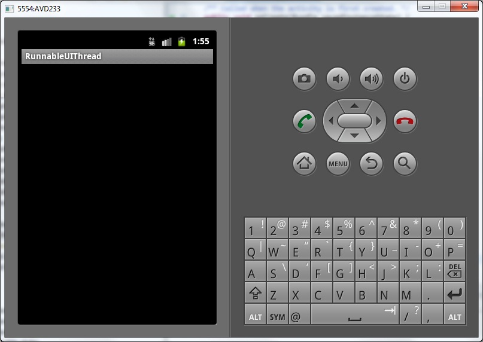
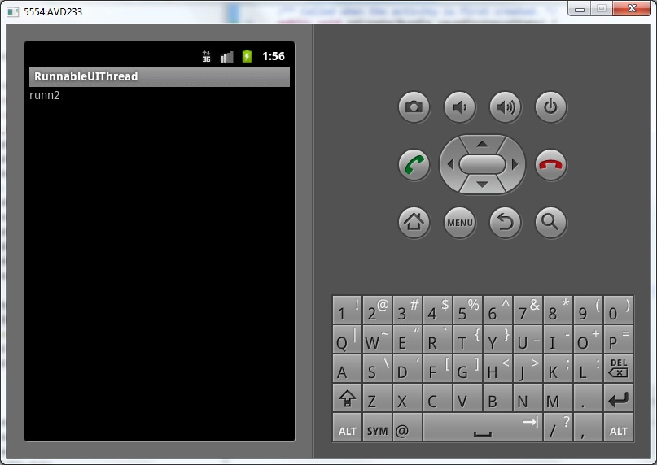

В этом уроке:
- рассмотрим еще пару способов запуска Runnbale в UI-потоке
Мы подробно рассмотрели Handler и увидели, что он умеет. Главное его достоинство – это умение выполнять код в UI-потоке. Существует еще пара способов выполнять Runnable в UI-потоке. Это методы:
Activity.runOnUiThread(Runnable)
View.post(Runnable)
View.postDelayed(Runnable, long)
Первые два похожи и отправляют Runnable на немедленную обработку. Я не знаю в чем их принципиальное отличие. Если у вас есть соображения на этот счет, пишите на форуме в ветке этого урока. А третий метод позволяет указать задержку выполнения Runnable.
Создадим приложение и опробуем эти методы.
Создадим проект:
Project name: P0851_RunnableUIThread
Build Target: Android 4.0
Application name: RunnableUIThread
Package name: ru.startandroid.develop.p0851runnableuithread
Create Activity: MainActivity
main.xml:
<?xml version="1.0" encoding="utf-8"?>
<LinearLayout
xmlns:android="http://schemas.android.com/apk/res/android"
android:id="@+id/llMain"
android:layout_width="fill_parent"
android:layout_height="fill_parent"
android:orientation="vertical">
<TextView
android:id="@+id/tvInfo"
android:layout_width="wrap_content"
android:layout_height="wrap_content"
android:text="">
</TextView>
</LinearLayout>TextView, которое будем обновлять из нового потока.
MainActivity.java:
package ru.startandroid.develop.p0851runnableuithread;
import java.util.concurrent.TimeUnit;
import android.app.Activity;
import android.os.Bundle;
import android.widget.TextView;
public class MainActivity extends Activity {
final String LOG_TAG = "myLogs";
TextView tvInfo;
/** Called when the activity is first created. */
public void onCreate(Bundle savedInstanceState) {
super.onCreate(savedInstanceState);
setContentView(R.layout.main);
tvInfo = (TextView) findViewById(R.id.tvInfo);
Thread t = new Thread(new Runnable() {
public void run() {
try {
TimeUnit.SECONDS.sleep(2);
runOnUiThread(runn1);
TimeUnit.SECONDS.sleep(1);
tvInfo.postDelayed(runn3, 2000);
tvInfo.post(runn2);
} catch (InterruptedException e) {
e.printStackTrace();
}
}
});
t.start();
}
Runnable runn1 = new Runnable() {
public void run() {
tvInfo.setText("runn1");
}
};
Runnable runn2 = new Runnable() {
public void run() {
tvInfo.setText("runn2");
}
};
Runnable runn3 = new Runnable() {
public void run() {
tvInfo.setText("runn3");
}
};
}В onCreate создаем новый поток. В нем мы через паузы выполняем runn1 и runn2, и планируем runn3 с задержкой в 2000 мсек, используя вышеупомянутые методы.
runn1, runn2 и runn3 – это просто Runnable, которые обновляют текст в TextView. Они должны быть выполнены в UI-потоке.
Все сохраним и запустим. Экран пустой.

Через 2 сек выполняется runn1
Еще через секунду runn2

И еще через 2 секунды срабатывает runn3, который был отложен на 2 сек.
Тем самым, если ваши алгоритмы не особо сложны, можно использовать эти методы для выполнения кода в UI-потоке. Если же нужны навороты и алгоритм достаточно сложен, то используем Handler.